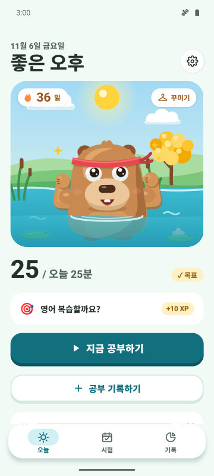
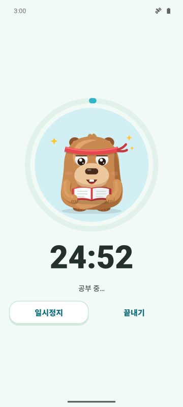
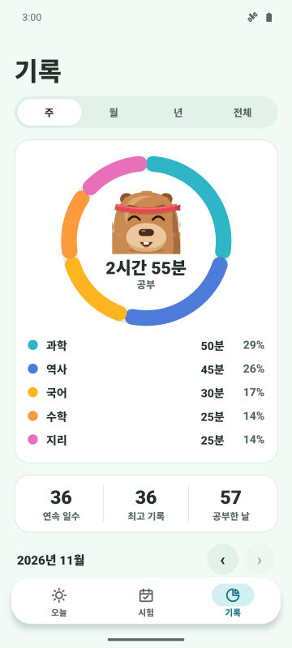
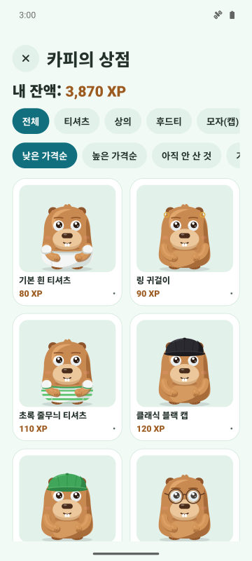

오늘의 목표와 연속 기록
하루에 몇 분 공부할지 정해요. 목표를 채우면 연속 기록이 올라가고 카피바라가 축하해 줘요.
집중 타이머, 매일 이어가는 연속 기록, 시험 D-day. 공부할수록 카피바라가 더 행복하고 튼튼해져요.
Google Play 출시 예정
안드로이드 무료. 아이폰은 추후 출시.

하루에 몇 분 공부할지 정해요. 목표를 채우면 연속 기록이 올라가고 카피바라가 축하해 줘요.
세 가지 모드의 타이머. 보호 모드에서는 피하고 싶은 앱 위에 카피바라가 나타나요.
시험을 등록하고 남은 날을 확인해요. 매일 가장 신경 써야 할 과목으로 미션이 와요.
공부로 XP를 모아 옷과 액세서리로 바꿔요. 기념일과 내 생일도 함께 축하해요.



네. 광고가 포함된 무료 앱이에요. 프리미엄(선택)은 광고를 없애고 보호 모드, 집중 중 알림 끄기, 매달 연속 기록 보호권 3개를 열어 줘요.
아니요. 데이터는 휴대폰에 저장돼요. 원하면 내 구글 드라이브와 동기화할 수 있어요.
네. 시험 날짜를 등록하면 D-day가 표시되고 7일, 3일, 1일 전에 알림이 와요.
Forest는 나무를 심는 앱이에요. CapyFoco는 공부할수록 자라는 카피바라를 돌보면서 연속 기록, 목표, 시험 D-day를 한 앱에서 관리해요.
지금은 안드로이드만 있어요. 아이폰 버전도 계획 중이에요.